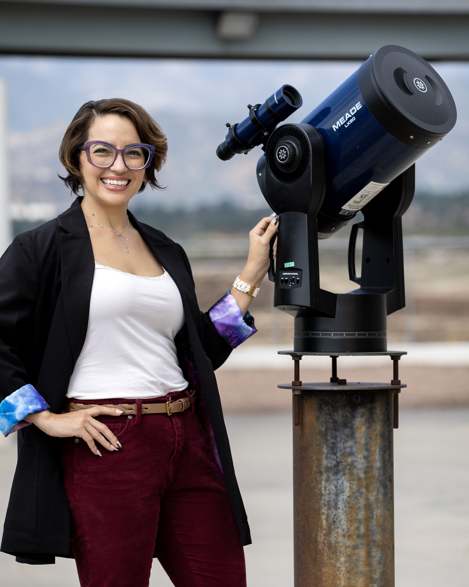

Equity Minded Pedagogy in Introductory Astronomy
As part of an Equity Minded Pedagogy professional development course, I reimaged the Introduction to Astronomy for Scientists course at CSU San Bernardino grounded in culturally responsive teaching. Course elements — including identity-centered final projects, structured prototyping, an in-class debate on dark matter, and anonymous "Pulse Checks" — aim to affirm students’ identities, promote critical inquiry, and foster belonging. Assessment data suggest these practices support engagement and a more inclusive, student-centered view of science. The equity-minded activity materials I developed are available here: Google Folder.